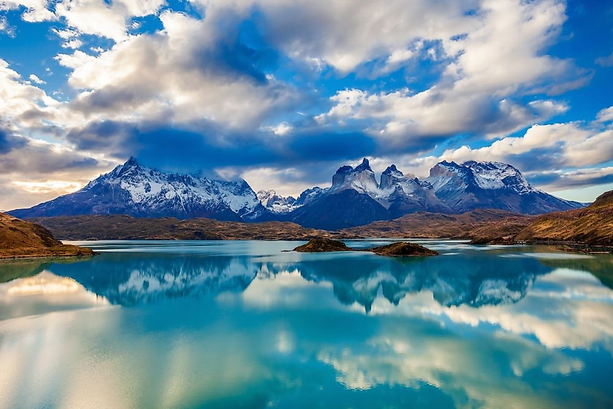
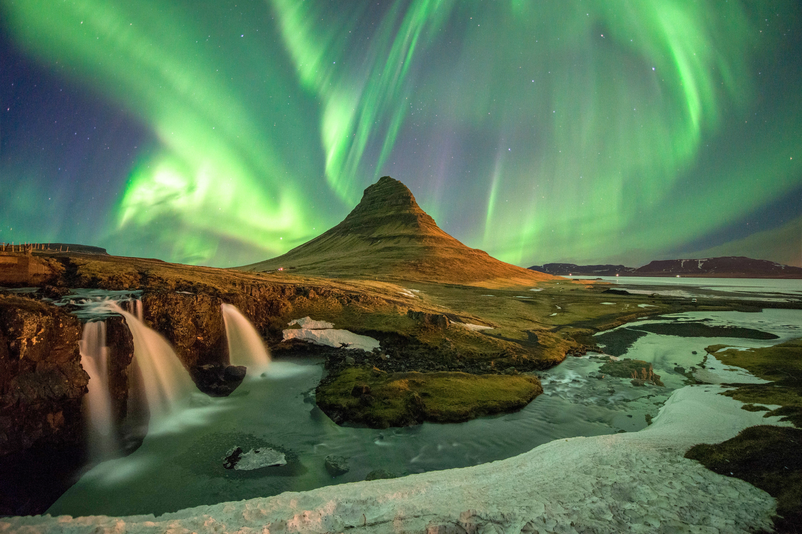
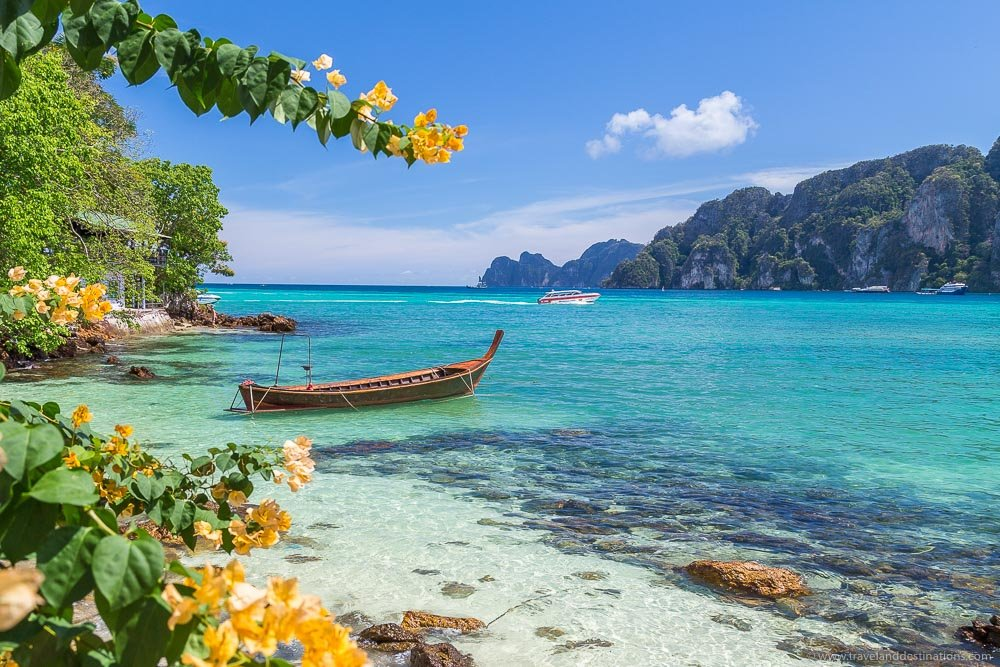

Love nature and live a carefree life with your loved one. Enjoy the beautiful scene and the peaceful moment.
Go traveling and explore the beautiful world. The world is wonderful and bright.
The power, ingenuity, and sheer beauty found in nature has always fascinated mankind. When we look at powerful ocean waves rolling in, we cannot help but feel small and powerless in comparison. Mighty trees in a vast forest inspire feelings of insignificance and awe. Animal mothers taking care of their young make us question the cruelty with which we sometimes treat one another. The truth is, nature can teach us many valuable lessons. It can also lead us to wonder, did this beautiful earth with all of its natural treasures come about by chance or was it created?
When we take the time to examine the beauty of the world around us, we are able to see parallels within our own lives. One who in tune with nature is in tune with the practice of living. Nature moves in a spiral as do our personal lives. It is important to spend time in nature because in this way we can become aware of its wisdom. If we ignore the beauty of nature and spend all our time in an urban jungle, our stress levels go up and we begin to feel as if we are made out of the concrete that we see all around us.
Whether one is watching a thrilling thunderstorm or looking up at a mighty tree, the experience of nature is one of awe. One cannot help but marvel at the intricate design of a single leaf, or the roar of a great waterfall. Time spent in nature is time spent realizing that you don't know it all and that you never will. The earth is meant to be enjoyed by its inhabitants. That includes keeping it in the pristine condition in which it was discovered. Everyone has a part of the earth that they relate to the most. Whether it is a majestic mountain range, a roaring waterfall, a bouquet of flowers, or the calm of the woods, these are places to get to know oneself and build bonds with family.
Here are some poems about nature. Hope you enjoy!
https://www.poetryinnature.com/poems/nature/beauty/ https://interestingliterature.com/2020/05/beautiful-poems-english-language/ https://reedsy.com/discovery/blog/love-poems